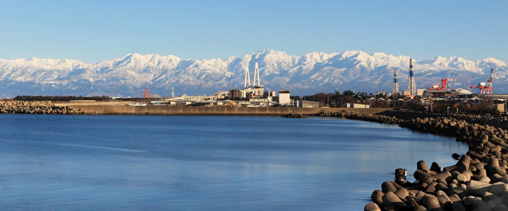
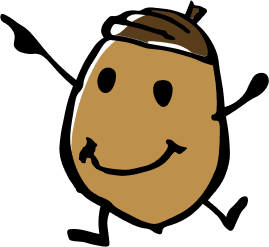
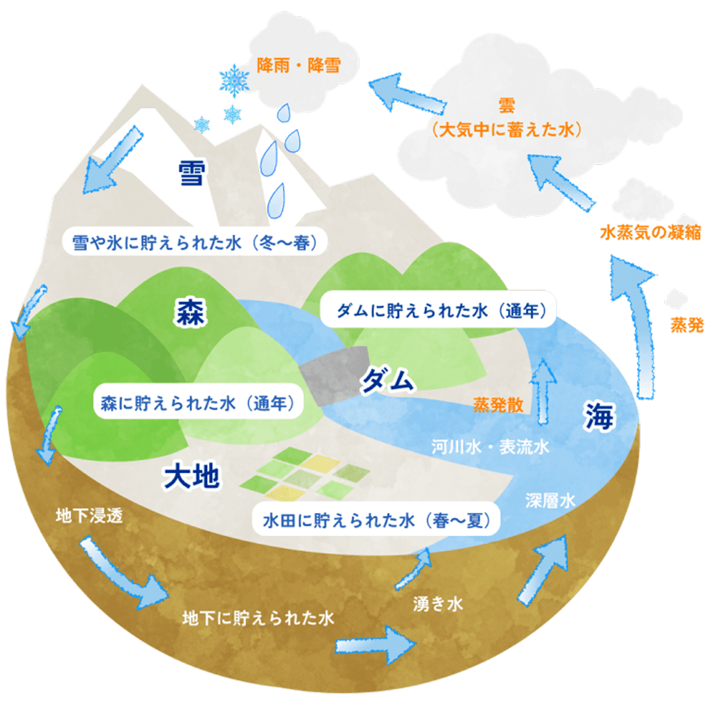
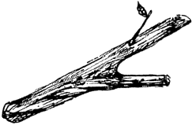
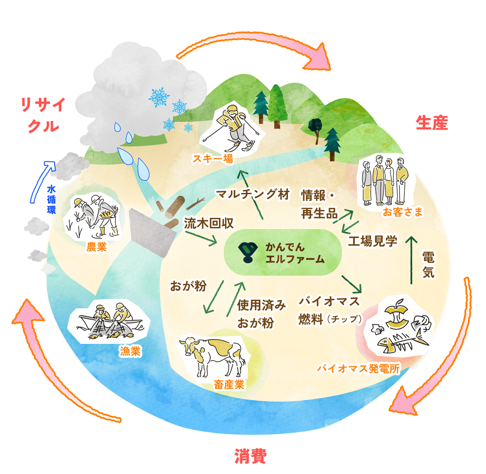

自然の恵みを地域で循環させ、
次の世代へつなげていく。
バイオリージョン
構想

バイオリージョンとは？ （生命地域主義）
自然のつながりと人の暮らしを
ひとつの循環として捉える地域の考え方です。
かんでんエルファームは、
このバイオリージョンの視点から
地域資源を活かした
持続可能な事業を展開しています。




地域と環境をつなげる
かんでんエルファームの考え方 かんでんエルファーム構想
2001年にグッドデザイン賞を受賞した「かんでんエルファーム構想」は
関西電力が長年にわたって培ってきた
ダム流木の再生処理技術という “知恵” と、
地域の自然資源を最大限に活かす知識を掛け合わせて誕生した
バイオリージョン発想の先駆け的プロジェクトです。

流域圏を中心に生産・消費・リサイクルが循環する地域社会
流域圏を中心に生産・消費・リサイクルが
循環する地域社会
\ お気軽にどうぞ！ /
お問い合わせ